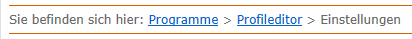
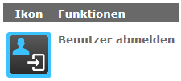

上下文相关帮助

该功能在程序右侧显示上下文相关的帮助窗口。程序窗口以合适的比例缩小。它为您提供关于特定上下文的信息，而不会覆盖程序中的重要功能。
帮助主题根据程序中所选视图或功能的上下文显示。
Info: 轻按“帮助”对话框的标题栏以隐藏它。
| 符号 | 含义 |
|---|---|

|
打开或关闭下拉文本 |
| 打开“打印机”对话框以打印当前显示的主题 | |
| 滚动返回主题的开头。仅当主题比帮助对话框中的垂直显示区域更长时，才会显示此按钮。 |
按下帮助对话框标题栏中的图钉图标可禁用上下文相关帮助。如果禁用上下文相关的帮助，即使您切换到另一个对话框或其他功能，内容仍保持不变。
Tip: 如果要求您在程序中选择不同视图和功能的过程描述，禁用上下文相关帮助是必要的。
| 符号 | 含义 |
|---|---|
| 启用上下文相关的帮助 | |

|
禁用上下文相关的帮助 |
无论当前的上下文如何，以下导航帮助都可用于导航上下文相关的帮助：
- 痕迹
- 图标按钮
痕迹显示帮助系统中当前主题的路径。轻按带下划线的条目即可跳转到更高级别的主题。

点击带有蓝框的图标按钮可跳转到特定主题。
